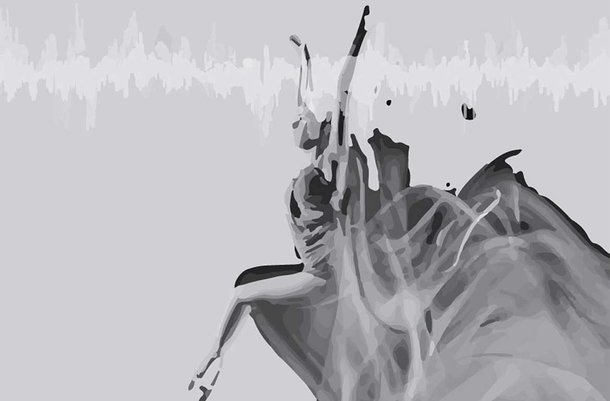

E_MOTION1.0 - A WEARABLE COMPUTING PROJECT
plays sounds by body movements
E_Motion1.0 is a Blazer with a removable electronic circuit, in its inner part, consisting of 4 Flex Sensors placed along the sleeves of the blazer, up to the shoulders and the elbows. This Sensors generate sounds making movements with arms like raising a shoulder or bending an elbow.
The project is made taking care about three important aspects: Mechanical, Electronics, Programming.
MECHANICAL:
E_Motion1.0 is made of a three layers fabric according to a sandwich stratification. The two outers layers, which form the coating, are of a thin NON WOVEN FABRIC which locally in Italy calls "telina sotto palma" and the layer in the middle is of a Hypoallergenic Polyester with a thickness about 3 mm for a total of about 5 mm. I wanted this thickness to give to the design a solid structure. I thought about it as 3D object so I used the Polyester fabric to make outer 5 cm wide bands on the blaze.
ELECTRONICS:
The electronics circuit consisting of several components.
-The Fabkit by myself produced, which is the main board, with an Atmega328p as microcontroller.
-An Input Shield, always produced by myself, to connect the sensor to the Board.
-A commercial Bluetooth Device to send data from the Board to PC.
-A 5V Battery assembled by myself for the power of the circuit.
-4 Flex Sensors connected by wires to the Input Shield.
All the circuit, except flex sensor are inserted in a protective case that I had designed and printed in the Fab Lab. The case and the sensor with wires are inserted trough slots in the interior of the blaze.
PROGRAMMING:
This is the heart of E_Motion. It works thanx input and output codes required to complete the project as a basic prototype.
Flex Sensors are setted on a sketch I wrote with Arduino Ide. The data collected by the microcontroller are sent via Bluetooth to PC. To translate this data in a sound output I need a second sketch which I wrote with Processing using the Beads Library.
DOWNLOAD FILES:
MECHANICAL=
PROJECT 2D
| ELECTRONICS CASE 2D-3D
PROTOTYPING=
3D PRINTING
| LASER CUTTING
ELECTRONICS=
FABKIT EAGLE-PNG-RML
| SENSORS SHIELD EAGLE-PNG-RML
PROGRAMMING=
INPUT
| OUTPUT

THE CONCEPT:
At the beginning of Fab Academy my project proposal was always about wearable to study the right posture during fitness or physical activities. With my background as an Architect and doing some reasearches I quickly realized that to reach that goal I should begin by one step easier. So I decided to focuson on still body movement E_Motion is the brainchild to study the body movement related to an output.
a sketch to starts

Handmade Sketch of the Blaze

Time taken for Roughing: 2.25 h
Time taken for Finishing: 1.30 h
Second Phase: Process.
....................................................................
Sanding the Mold.
What I need for the mixtures.
Third Phase: Prototype.
Once ready the Mold, followed a long procedure of some subphases. The coordination with some colleagues was crucial to perform simultaneously some procedures.
.